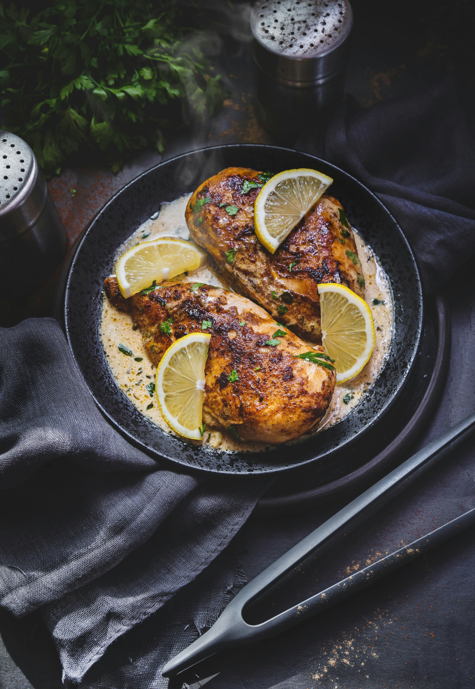

Home
Sheet Pan Lemon Artichoke Chicken Thighs

Description
These chicken thighs are really easy to prep for a "lazy" meal.
Even so, they still combine all the ingredients in a way that's so delicious
that you'll want to leave behind every other recipe.
Ingredients
- 1/4 cup melted butter
- 2 tablespoons honey
- 4 cloves garlic, minced
- 1 teaspoon salt-free Greek seasoning
- 1 (12 ounce) jar marinated artichoke hearts
- 6 skinless, boneless chicken thighs
- 1 lemon, thinly sliced
- 1/2 teaspoon red pepper flakes (optional)
- salt and freshly ground black pepper to taste
- fresh oregano sprigs for garnish (optional)
Steps
-
Gather all ingredients. Preheat the oven to 400 degrees F (200 degrees C) and
line a sheet pan with aluminum foil.
-
In a large bowl, combine melted butter, honey, minced garlic, and Greek
seasoning, and stir.
-
If whole, cut artichoke hearts into halves or quarters, and add them along with
1/3 cup of their marinade to the bowl.
-
Pat chicken thighs dry, and add to the artichoke mixture.
-
Stir in lemon slices and red pepper flakes. Season with salt and pepper; pour
contents of the bowl into the prepared sheet pan. Spread evenly into a single
layer, with cut side of the thighs up.
-
Place in the preheated oven and bake about 15 minutes, then turn chicken and
baste with pan juices. Continue baking for an additional 15 minutes, or until the
chicken tests 165º on an instant-read thermometer.
-
Drizzle chicken and artichokes with pan juices, garnish with fresh oregano, and
serve.